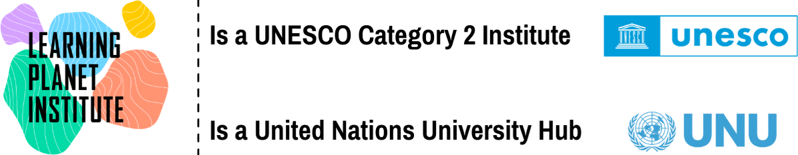
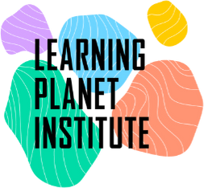
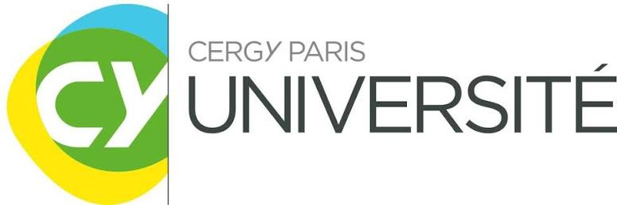

One hour to figure out what matters to you.
Explore what you love, what you're good at, what the world needs, and what you could get paid for.
- 1 hour
- 100% free
- Your personal game plan
- A verified certificate
Access paid for you by the Stellantis Foundation.
Only got 30 seconds? Try the quick test →Ikigai (生き甲斐) is a Japanese word for your reason to get up in the morning.
How the hour works
An AI guide called Spark asks you questions, one step at a time. You answer in your own words, by typing or talking.
- Name what you love
- Spot what you're good at
- Pick a cause you care about
- Sum up your Ikigai in one sentence
- Turn it into a project or job idea
- Choose a first step for this week
At the start and at the end, you answer 12 quick questions, so you can see how your thinking moved.
What you leave with
Your personal game plan
- Your best ideas, in your own words
- What drives you, explained from your answers
- Three paths to explore (studies, projects or jobs), each with a first step and where it could lead
Your Ikigai certificate
- Issued by the Learning Planet Institute
- Add it to your CV, applications or LinkedIn
- A QR code lets anyone check it's real
- No exam, no grade: you earn it by completing the hour
Who's behind Ikigai+



Ikigai+ was created by the Learning Planet Institute in Paris, which has spent 20 years inventing new ways to learn. With UNESCO and the United Nations University, we're building a Planetary Academy for young people who want to help tackle the world's big challenges.
Ikigai+ is part of the MOOD programme, the Planetary Academy's online courses and certificates. Explore MOOD
Questions
Is it really free?
Yes. No payment, no trial, no card details. Your access is paid for by the Stellantis Foundation.
Do I need an account?
Yes, a free one. It saves your game plan and your certificate, and lets you stop and pick up where you left off.
What if I have no idea what I want to do?
That's the best place to start. Most people begin unsure. You don't need a plan, just an hour and honest answers.
Is it a personality test, or therapy?
Neither. There are no types, scores or labels, and it isn't therapy or coaching. You leave with ideas to explore and talk through, not predictions about your future.
Is it AI?
Yes. An AI guide called Spark asks the questions and writes your game plan from your answers. It reflects your own thinking back to you instead of telling you what to do, and your game plan clearly marks which parts are ideas to explore.
Is the certificate real?
Yes. It's issued by the Learning Planet Institute through BCdiploma. Anyone can check it by scanning its QR code. It shows you completed Ikigai+.
Who can take it?
Anyone aged 18 or over can sign up on their own. Under 18? You can take it through your school or a programme, with a teacher.
What happens to my data?
Your answers stay yours. Ikigai+ follows GDPR, the EU's data protection rules: you can download or delete your data at any time. We never sell your data or use it for ads. For research, we only use anonymised, grouped results, so no one can identify you.
Can I do it in another language?
Yes. Spark replies in the language you write in, so you can do it in French, Spanish and many other languages.
What do I need?
A phone or computer, an internet connection, and about an hour somewhere quiet. You can type your answers or use your microphone.